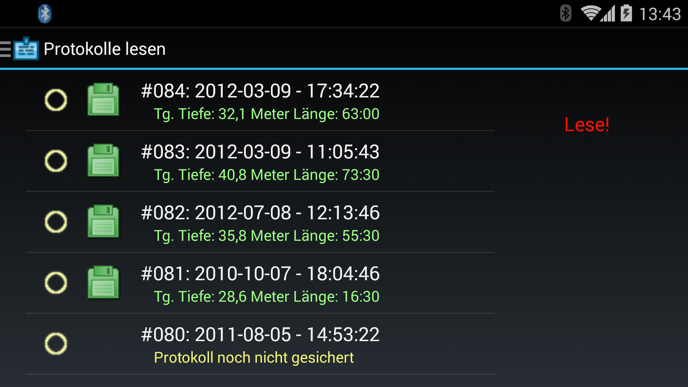
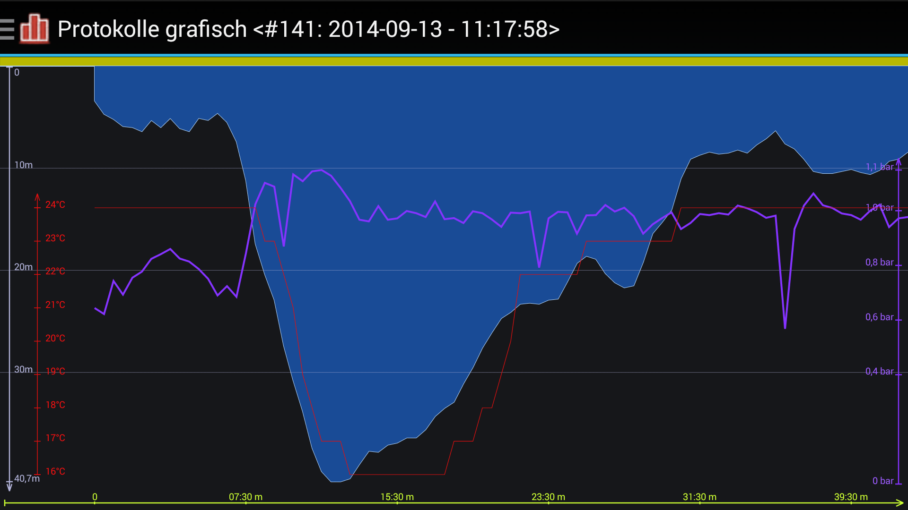

Inhalt
Allgemein
Der SPX.42
Der SPX.42 ist ein voll Trimix (TMX) tauglicher Tauchcomputer/Systemcontroller.
Das verwendete farbige OLED Display (2.4“/320 x 240 Pixel) bietet eine optimale
Anzeigeschärfe mit größtmöglichem Betrachtungswinkel.
Außerdem beinhaltet der SPX.42:
- Setpoint-Controller zur Ansteuerung eines Solenoid (GEM)
- Anschluss eines TCM (Temperatur Cluster Monitor) nur in Verbindung mit Solenoid Platine möglich.
- Anschluss eines Submatix CO2-Sensors
- Head Up Display (HUD)
Vollständige Informationen unter submatix.com
Diese App
Diese App konfiguriert den SPX.42 Tauchcomputer, programmiert bis zu 8 Gase im
SPX.42, liest Tauchgangsprotokolle der Tauchgänge, speichert und exportiert diese
Protokolle und stellt die Tauchprotokolle grafisch dar.
Die App kann nahezu beliebig viele SPX.42 Tauchcomputer verwalten. Dies ist nur
von den vorhandenen Resourcen auf dem Android Gerät abhängig.
Die Daten werden intern in einer SQL-Datenbank und Datendateien gespeichert.
Programmstart / App-Start
Erster Programmstart
Beim ersten Programmstart bleibt der "Navigator", also das Anzeigeelement für die Navigation
sichtbar, um dem neuen Benutzer dessen Vorhandensein zu zeigen.
Dieses wird nur beim ersten Programmstart angezeigt.
Erster Start
Programmeinstellungen
Es können verschiedene Parameter der App über den Menüpunkt "Einstellungen" festgelegt werden.
Die Einstellungen sind thematisch gegliedert und werden später kurz erläutert.
Einstellungen dunkel
Einstellungen hell
Einheiten Anzeige
- Hier gibt es nur einen Eintrag. Dieser bestimmt die Formatierung der Datums- und Zeitangaben.
Dateisystem Einstellungen
-
Daten Verzeichnis
Zeigt auf das Verzeichnis, in welchem die Daten und die Datenbank der Logdaten gespeichert werden
-
Tippen öffnet einen Auswahldialog
(Hinweis: Verschiebt KEINE vorhandene Daten)
-
Zeige alle neuen Logeinträge
Es sind zwei Einstellungen möglich
Mail Konfiguration
-
Hauptempfänger
- Sollen Logdaten exportiert und per Mail versendet werden, ist hier die Empfänger-Mailadresse einzugetragen.
-
Copy Empfänger
- Ist hier eine Mailadresse eingetragen, wird zusätzlich eine Kopie der Mail via "cc" an diese Adresse gesendet.
-
komprimiere UDDF
- Diese Option komprimiert die zu versendenden Daten vor dem Versenden mit dem ZIP-Algorithmus.
Sonstiges
-
Thema wechseln
Dieser Schalter wechselt zwischen einem dunklen (default, auf AMOLED Displays Strom sparend) und einem hellen Thema.
Dieser Wechsel wird unmittelbar vorgenommen.
-
BT deaktivieren
Dieser Schalter bestimmt, ob die Bluethooth-Schnittstelle beim Beenden des Programmes (wieder) deaktiviert wird oder aktiv bleibt.
-
Online Hilfe erlauben?
Dieser Schalter aktiviert/deaktiviert diese Onlinehilfe auf dem Mobilgerät.
Dies dient dazu, bei Mobilfunkverträgen mit Volumenberechnung Gebühren zu sparen.
Mit dem SPX.42 verbinden
Der SPX.42 muss eingeschaltet sein und die Funktion "Synchronisation" muss ausgewählt und aktiviert sein.
Bei Einschalten der Synchronisation erscheint für einige Zeit die PIN. Diese wird für
die Verbindungsaufnahme benötigt.
Ab Firmwareversion V2.7_H wird automatisch beim Verbinden die Urzeit des SPX.42 mit dem Androidgerät synchronisiert.
Verbindung mit SPX.42
Verbinden mit neuem Gerät
Um die App mit einem Gerät zu verbinden, welches noch nicht "gepaart", d.h noch nicht mit dem Androidgerät
"bekannt gemacht" wurde, muss zunächst eine Suche nach neuen Bluethooth Geräten durchgeführt werden.
Diese wird mit der Schaltfläche "Finden von BT Geräten" gestartet:
Geräte suchen
Das neue Gerät wird danach in der Liste (hier rot markiert) angezeigt.
 Neues Gerät (markiert)
Neues Gerät (markiert)
Anschließend sollte zur besseren Wiedererkennbarkeit ein Alias für das Gerät vergeben werden, da
die Geräte sich nur mit einer numerischen Kennung über die Bluethoothverbindung melden.
Alias und PIN setzen (ab Android Version 4.4)
Leider ist diese einfache Art der Vergabe der PIN nur ab Android 4.4 möglich. Android von Version 4.03 bis
einschließlich Android Version 4.3 lassen nur die Vergabe des Aliasnamens zu. Das "Paaren" mit der PIN muß
hier über die Systemfunktionen des Gerätes erfolgen.
Ansicht mit Alias. Dieser wird in allen Anderen Ansichten so angezeigt
Verbunden wird das Gerät mit dem Bluethooth Symbol oben rechts (rot markiert)
Ansicht Verbunden. (Symbolfarben sind verändert)
Verbinden mit vorhandenem Gerät
Ansicht mit Alias. Dieser wird in allen Anderen Ansichten so angezeigt
Verbunden wird das Gerät mit dem Bluethooth Symbol oben rechts (rot markiert)
Ansicht Verbunden. (Symbolfarben sind verändert)
Erweiterung des Menüs
Wenn das Gerät (SPX.42) erfolgreich mit dem Androidgerät verbunden wurde, erweitert sich das
Menü auf der linken Seite des Bildschirmes automatisch um die nun "online" verfügbaren Funktionen.
Menü Komplett
SPX.42 Status
In dieser Ansicht wird der aktuelle Status des SPX.42 angezeigt
Die Akkuspannung, Seriennummer, Firmwareversion und der Lizenzierungsstatus.
SPX.42 Status / Lizenzierung
SPX.42 Einstellungen
Der SPX.42 kann an Land mit Hilfe der Bluethooth Schnittstelle über Ihr Androidgerät konfiguriert werden.
Einzig die Lizenzierung kann ausschließlich am SPX.42 selbst vorgenommen werden.
SPX.42 Einstellungen
SETPOINT
-
Autosetpoint
Hier wird vorgegeben, ob und ab wann der eingestellte Setpoint aktiviert wird
Folgende Einstellungen sind möglich:
- off
- 5/6 Meter (je nach Firmware Version)
- 10 Meter
- 15 Meter
- 20 Meter
-
Wähle gewünschten Highsetpoint
Hier wird der gewünschte PPO2 eingestellt. Gültig ist dieser ab der Tiefe, die
im "Autosetpoint" gewählt wurde
Der Setpoint kann unter Wasser selbstverständlich jederzeit verändert werden.
Folgende Einstellungen sind möglich:
- 1.0 Bar
- 1.1 Bar
- 1.2 Bar
- 1.3 Bar
- 1.4 Bar
- 1.5 Bar
- 1.6 Bar
DEKOMPRESSION
-
Auswahl Voreinstellung
Hier werden die Gradienten entsprechend folgender Voreinstellungen gesetzt:
- Sehr Konsevativ
- Standart
- Moderat
- Aggressiv
- Sehr aggressiv
- Benutzerdef.
-
setze Gradient
Will der Benutzer eigene Gradienten, abweichend von den Voreinstellungen
setzen, kann über diese Funktion eine Eigene Einstellung in den SPX.42
übertragen werden.
Einstellungen Gradienten für Dekompression
-
Tiefe für letzten Stopp
Der letzte Sicherheits/Dekostopp findet in der folgenden voreingestellten Tiefe statt
-
dyn. Gradienten
Die Einstellung dynamische Gradienten beeinflusst die Gradienten im Falle eines Bailouts
mit offenem Gerät insofern, als eine aggressive Einstellung für Dekompression automatisch
gewählt wird um die Dekompressionszeit in diesem Fall zu verkürzen.
(Siehe Handbuch zum SPX.42)
Die Einstellungen umfassen die beiden folgenden Punkte:
-
Deep Stops
Wenn aktiviert, werden hier tiefe (kurze) Dekompressionsstops im SPX.42 berücksichtigt und angezeigt.
Es gibt folgende zwei Einstellungen:
- kein tiefer Stop
- tiefer Stop
ANZEIGE
-
Helligkeit
Der SPX.42 kann verschiedene Helligkeiten der Anzeige voreinstellen.
Diese können unter Wasser selbstverständlich jederzeit verändert werden.
Möglich sind folgende Werte:
-
Display-Ausrichtung
Hier kann die Anzeige des SPX.42 um 180 Grad gedreht werden
Die Einstellung wirkt nach beenden der Synchronisation am SPX.42
Es gibt zwei Einstellungen:
- landsc. normal
- landsc. 180°
SPX42 EINHEITEN
-
Temperatureinheit
Der SPX.42 kann mit den Temperatureinheiten Grad Celsius und Fahrenheid arbeiten
Es gibt diese Einstellungen:
-
Einheit für die Tiefe
Der SPX.42 kann zwei Einheitensysteme für die Tiefe nutzen
Es gibt diese Einstellungen:
-
Art des Wassers
Die Tiefenkalibrierung des SPX.42 ist für folgende Einstellungen vorgesehen:
Gase bearbeiten
Der Tauchcomputer SPX.42 ist in der Lage 8 Gase zu speichern, wovon 2 Gase als
Diluent, und alle Gase als Bailoutgas eingerichtet werden können. So ist eine
große Bandbreite an Einsatzmöglichkeiten in verschiedenen Konfigurationen
denkbar.
Unter der Nummer des Gases ist eine Zeile mit Informationen zum gespeicherten Gas
eingeblendet. Die Gasnummer, danach die Bezeichnung des Gases nach der international
üblichen Bezeichnung der Gemische.
Die Bezeichnungen DIL1 und DIL2 stehen
für Diluent Nr 1 und Diluent Nr 2, die Bezeichnung BO steht für Bailoutgas.
Nach dieser Information folgt die MOD (Maximum Operation Depth), welche die maximale
Einsatztiefe des Gases darstellt. Diese ist mit einem maximalen PPO2 von 1.6 Bar berechnet.
Gaseinstellungen des SPX.42 (8 mögliche Gase)
Soll ein Gas bearbeitet werden, genügt ein Tip auf die entsprechende Zeile, und ein
Bearbeitungsdialog öffnet sich.
Die Möglichkeiten des Dialoges sind durch die Lizenzierung des SPX.42 vorgegeben.
Gaseinstellungen für ein einzelnes Gas
Protokolle lesen
Der SPX.42 speichert in den Zeitabständen, welche in den Einstellungen zum Gerät
festgelegt wurden, Tauchdaten in eine Protokolldatei. Diese Protokolle können mit dieser
App gelesen, gespeichert, exportiert und grafisch angezeigt werden.
Die Speicherung folgt in einer internen Datenbank und Datendateien
Der Export erfolgt in einem speziellen Dateiformat (uddf Version 2.2.0). Diese kann von
einigen Logbuchprogrammen (wie zum Beispiel Diving Log von Sven Koch )
gelesen werden und samt Tauchprofil und PPO2 in das Logbuch übernommen werden.
Informationen unter www.divinglog.de
Protokollliste vom SPX.42 lesen
Protokolle zum Auslesen markieren
Protokolle nach Tip auf "Lese!" auslesen und speichern

Gespeicherte Protokolle sind mit Symbol gekennzeichnet
Protokolle visualisieren
Diese App kann nahezu beliebig viele SPX.42 Tauchcomputer verwalten. Daher muß
zu Beginn der Visualisierung der SPX.42 Tauchcomputer ausgewählt werden.
Zuerst das Gerät auswählen
Das zu visualisierende Protokoll auswählen

Anzeige komplettes Protokoll
Um Details sehen zu können kann, wie bei Android üblich, durch Gesten eine
Ausschnittsvergrößerung / Verkleinerung erreicht werden.
Der sichtbare Aussschnitt ist der gelbe Balken am oberen Rand:
Vergrößerung durch Spreizgeste
Protokolle exportieren / löschen
Die im SPX.42 gespeicherten Protokolle können für eine weitere Verwendung (z. B.
in einem Logprogramm) exportiert werden.
Der Export erfolgt drahtlos über WLAN oder Mobilfunkverbindung mittels EMail.
Dafür ist in den allgemeinen Programmeinstellungen eine Vorgabe-Mailadresse zu
hinterlegen.
Export / Löschen
Auswählen eines Gerätes für Export / Löschen
Protokoll(e) wählen Export / Löschen
In diesem Abschnitt können auch einzelne Protokolle oder alle Protokolle eines
SPX.42 Tauchcomputers vom Androidgerät gelöscht werden.
Die Komplette Löschung erfolgt (nach einer Warnmeldung), wenn kein Protokoll
ausgewählt wurde.
Löschen aller Protokolle